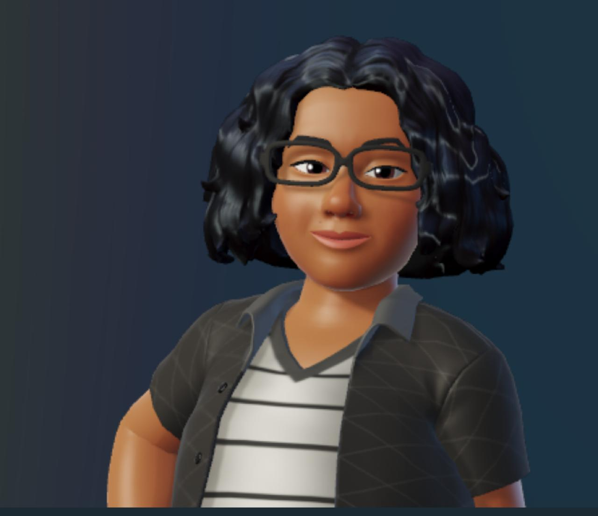

Olá! Sou Kémellyn Falcone Desenvolvedora FrontEnd
Desenvolvedora FrontEnd Junior, estudante de Análise e Desenvolvimento de Sistemas (ADS) na Fatec Presidente Prudente.
Saiba Mais!


Desenvolvedora FrontEnd Junior, estudante de Análise e Desenvolvimento de Sistemas (ADS) na Fatec Presidente Prudente.
Saiba Mais!
Que tal se conectar comigo nas redes sociais abaixo e saber mais sobre meu trabalho?


Olá! Sou Kémellyn Falcone, uma entusiasta da tecnologia com 34 anos de idade, cujo fascínio por computadores surgiu desde a minha primeira aquisição de um. Ao longo dos anos, mergulhei cada vez mais fundo no vasto universo da computação.
Atualmente, ocupo a posição de Analista de Suporte na área de tecnologia, enquanto me aproximo do término da minha graduação em Análise e Desenvolvimento de Sistemas. No entanto, minha verdadeira paixão reside no desenvolvimento Front-End, onde venho concentrando meus estudos de forma dedicada. Minha ênfase recai sobre as linguagens HTML, CSS, JavaScript e React.
Acredito firmemente no poder transformador do mundo online e em como podemos utilizar essa plataforma para causar impacto no mundo real. Este √© o meu objetivo: contribuir de maneira significativa para um futuro digitalmente mais inclusivo e dinâmico.üöÄ
Descubra as habilidades e ferramentas que domino e que me permitem criar soluções criativas e funcionais para meus clientes.
Capacidade de criar layouts responsivos e acessíveis usando HTML semântico para estruturar o conteúdo da página.
Capacidade de estilizar os elementos HTML usando CSS, definindo cores, fontes, espaçamento e layout para criar uma apresentação visual atraente e consistente.
Conhecimento básico de JavaScript para adicionar interatividade a páginas web, manipular DOM, lidar com eventos e realizar validações de formulários.
Experiência com sistemas de controle de versão, como Git, e familiaridade com conceitos como commits, branches e pull requests.
Alguns dos meus projetos desenvolvidos nos cursos que
estou realizando ou que já conclui.

App Habits foi desenvolvido em um evento do NLW exclusivo e gratuito, promovido pela Rocketseat para ensino de tecnologias WEB.
Clique aqui para ver o projetoProjeto desenvolvido no curso mini curso de JAVASCRIPT
Clique aqui para ver o projetoUm simples decodificador de texto que permite criptografar e descriptografar mensagens.
Clique aqui para ver o projeto